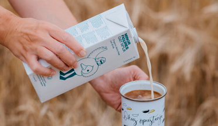
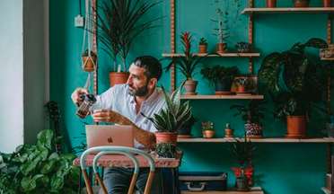
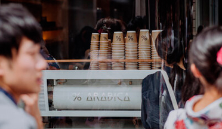
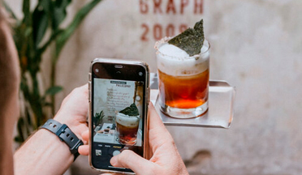
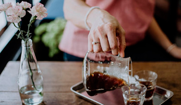
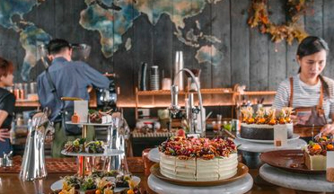
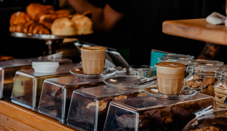
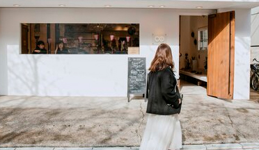
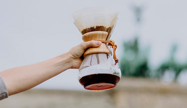

{% set title="Blog" %}
{% set lang="en" %}

{% include 'parts/_head.html' %}

{% include 'parts/_header.html' %}

<main class="wrapper">
    <section class="blog">
        <h2 class="blog_h">
            Latest Blog Posts 
        </h2>
        <div >
            <ul class="blog__list blogs">
                <li class="blogs__link ">
                    
                    <p class="blogs__link_text">
                        Oat Milk — Coffee's Eco-Friendly Companion
                    </p>
                    <time class="blogs__link_times"datetime="2020-07-02">Jul 2, 2020</time>
                </li>
                <li class="blogs__link ">
                    
                    <p class="blogs__link_text">
                        How to Market Your Cafe as an Ideal Place to Work
                    </p>
                    <time class="blogs__link_times"datetime="2020-02-25">>Feb 25, 2020</time>
                </li>
                <li class="blogs__link ">
                    
                    <p class="blogs__link_text">
                        Tips for Creating an Effective Cafe Branding Strategy
                    </p>
                    <time class="blogs__link_times"datetime="2020-02-22">Feb 22, 2020</time>
                </li>
                <li class="blogs__link ">
                    
                    <p class="blogs__link_text">
                        Unlock the Power of Social Media Marketing for Your Cafe
                    </p>
                    <time class="blogs__link_times"datetime="2020-01-23">Jan 23, 2020</time>
                </li>
                <li class="blogs__link ">
                    
                    <p class="blogs__link_text">
                        The Pros and Cons Experienced by Coffee Professionals
                    </p>
                    <time class="blogs__link_times"datetime="2020-01-08">Jan 8, 2020</time>
                </li>
                <li class="blogs__link ">
                    
                    <p class="blogs__link_text">
                        Bangkok Cafe and Neighbourhood Guide
                    </p>
                    <time class="blogs__link_times"datetime="2018-12-08">Dec 8, 2018</time>
                </li>
                <li class="blogs__link ">
                    
                    <p class="blogs__link_text">
                        Tel Aviv Specialty Coffee and Travel Guide
                    </p>
                    <time class="blogs__link_times"datetime="2018-11-16">Nov 16, 2018</time>
                </li>
                <li class="blogs__link ">
                    
                    <p class="blogs__link_text">
                        7 Easy Ways to Increase Your Cafe’s Foot Traffic
                    </p>
                    <time class="blogs__link_times"datetime="2018-11-15">Nov 15, 2018</time>
                </li>
                <li class="blogs__link ">
                    
                    <p class="blogs__link_text">
                        Chemex Coffee Maker — Review and Brew Guide
                    </p>
                    <time class="blogs__link_times"datetime="2018-11-15">Nov 15, 2018</time>
                </li>
            </ul>
        </div>
    </section>
<ul class="blog-nav">
    <li class="blog-nav__count">1</li>
    <li class="blog-nav__count">2</li>
    <li class="blog-nav__count">3</li>
    <li class="blog-nav__count">4</li>
    <span class="blog-nav__count">...</span>
    <li class="blog-nav__count">9</li>
</ul>
<button class="blog__prev-btn"> <
</button>
<button class="blog__next-btn">
    >
</button>
</main>

{% include 'parts/_foot.html' %}